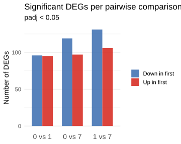

Summary descriptives table by groups of `Treatment.Group'
Adu
IgG
p.overall
N=3
N=3
0
50.8 [47.6;51.0]
47.2 [46.5;54.5]
0.827
1
44.0 [43.8;47.8]
50.7 [41.9;50.7]
0.825
7
5.20 [4.60;5.20]
3.60 [2.85;4.45]
0.507
Cell counts by brain region
Code
# Cell counts per Region, faceted by cluster, dodged by treatmentastro_sub@meta.data |>filter(!is.na(Region)) |> dplyr::count(seurat_clusters, Region, Treatment.Group) |>ggplot(aes(x = Region, y = n, fill = Treatment.Group)) +geom_col(position ="dodge", alpha =0.85) +facet_wrap(~seurat_clusters, scales ="free_y", labeller = label_both) +scale_fill_manual(values =c("Adu"="#d73027", "IgG"="#4575b4")) +labs(title ="Cell counts per brain region",y ="Number of cells", x =NULL, fill =NULL) +theme_minimal(base_size =16) +theme(axis.text.x =element_text(angle =45, hjust =1),panel.grid.major.x =element_blank(),strip.text =element_text(size =14, face ="bold"))
Pairwise DE between clusters
Pseudobulk DESeq2 comparing cluster pairs. For each comparison, cells from both clusters are pooled across all samples, aggregated per sample-cluster combination, and tested with DESeq2.
The bar chart below tallies the number of significant DEGs (adjusted p < 0.1) for each pairwise cluster comparison, stratified by direction of effect: genes with higher expression in the first cluster of the pair (red) versus genes with higher expression in the second (blue).
Code
library(pheatmap)pairwise_de <-readRDS("results/20260305-pairwise_DE_astro_clusters.rds")# Bar chart of up/down DEG counts per comparisondeg_counts <-imap(pairwise_de, \(res, comp) {if (nrow(res$significant_results) ==0) return(NULL) label <-gsub("cl(\\d+)_vs_cl(\\d+)", "\\1 vs \\2", comp) res$significant_results |>rownames_to_column("gene") |>mutate(Comparison = label,Direction =ifelse(avg_log2FC >0, "Up in first", "Down in first"))}) |>compact() |>list_rbind() |> dplyr::count(Comparison, Direction)ggplot(deg_counts, aes(x = Comparison, y = n, fill = Direction)) +geom_col(position ="dodge", width =0.7, alpha =0.9) +scale_fill_manual(values =c("Up in first"="#d73027", "Down in first"="#4575b4")) +labs(title ="Significant DEGs per pairwise comparison",subtitle ="padj < 0.1",x =NULL, y ="Number of DEGs", fill =NULL) +theme_minimal(base_size =14) +theme(panel.grid.major.x =element_blank(),axis.text.x =element_text(size =14))

Top DEG heatmap
To highlight genes that most strongly distinguish the three clusters, a heatmap displays the log2 fold change for the top 20 most significant DEGs (by adjusted p-value) from each pairwise comparison. Each column represents a cluster pair (e.g., “0 vs 1”) and each row a gene. The colour scale is symmetric around zero, with red indicating higher expression in the first cluster and blue indicating higher expression in the second. Asterisks mark gene–comparison combinations that individually reach significance (adjusted p < 0.1). Genes are hierarchically clustered by their fold-change profiles to reveal shared and comparison-specific expression patterns.
Code
# Collect all results into a long table with log2FC and padj per comparisonall_de_long <-imap(pairwise_de, \(res, comp) { label <-gsub("cl(\\d+)_vs_cl(\\d+)", "\\1 vs \\2", comp) res$all_results |>rownames_to_column("gene") |>mutate(Comparison = label)}) |>list_rbind()# Select top 20 DEGs per comparison by padjtop_genes <- all_de_long |>filter(p_val_adj <0.1) |>group_by(Comparison) |>arrange(p_val_adj, .by_group =TRUE) |>slice_head(n =20) |>pull(gene) |>unique()if (length(top_genes) >0) {# Build log2FC matrix (genes x comparisons) fc_matrix <- all_de_long |>filter(gene %in% top_genes) |>pivot_wider(id_cols = gene, names_from = Comparison, values_from = avg_log2FC) |>column_to_rownames("gene") |>as.matrix()# Build significance matrix for asterisk overlay sig_matrix <- all_de_long |>filter(gene %in% top_genes) |>pivot_wider(id_cols = gene, names_from = Comparison, values_from = p_val_adj) |>column_to_rownames("gene") |>as.matrix() display_matrix <-ifelse(!is.na(sig_matrix) & sig_matrix <0.1, "*", "") clim <-ceiling(max(abs(fc_matrix), na.rm =TRUE))pheatmap(fc_matrix,color =colorRampPalette(c("#4575b4", "white", "#d73027"))(100),breaks =seq(-clim, clim, length.out =101),na_col ="grey88",display_numbers = display_matrix,fontsize_number =24,number_color ="black",cluster_rows =TRUE,cluster_cols =FALSE,main ="Top DEGs — pairwise cluster comparisons\n",fontsize =18,fontsize_row =13,angle_col =45,cellwidth =30,cellheight =30 )} else {message("No significant DEGs found across any comparison — heatmap skipped.")}